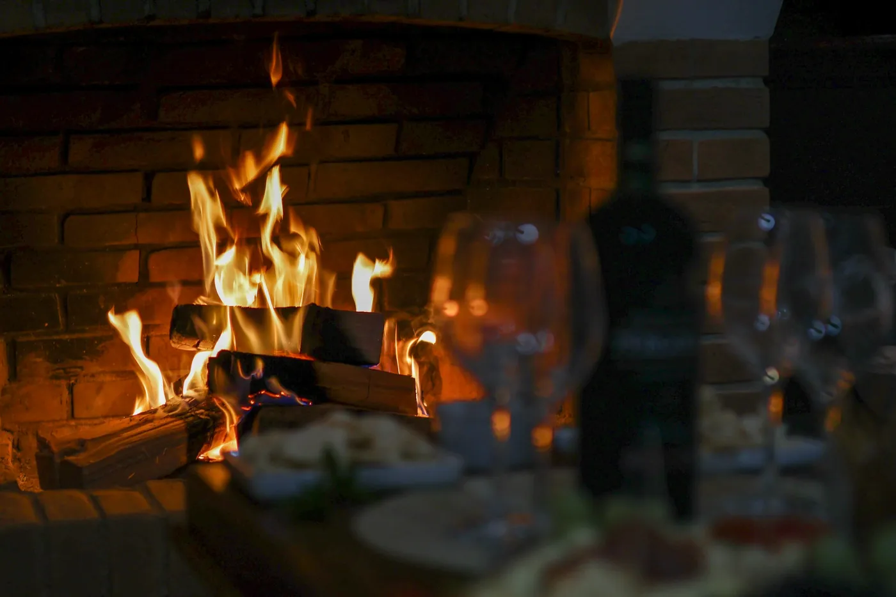
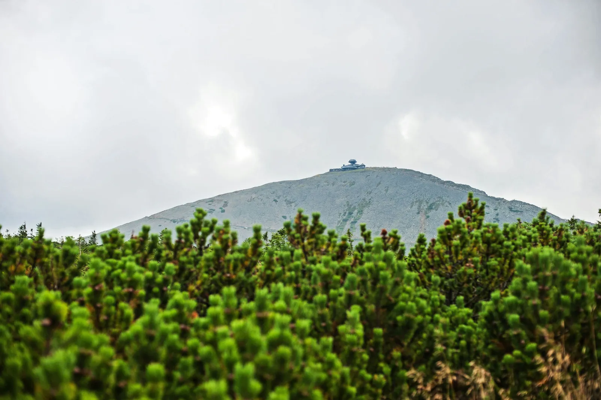

Karpacz
Trzy Doliny · Karpacz
Drewniana chata u stóp Karkonoszy. Zimą pali się kominek, a z okien sali na piętrze widać Śnieżkę. Po szlaku przyjdź prosto w butach, suszarka na kurtki czeka przy wejściu.
Co tu znajdziesz
Kominek i 70 miejsc
Widok na Śnieżkę z sali na piętrze
Parking dla gości i miejsce na narty

Pozostałe lokale